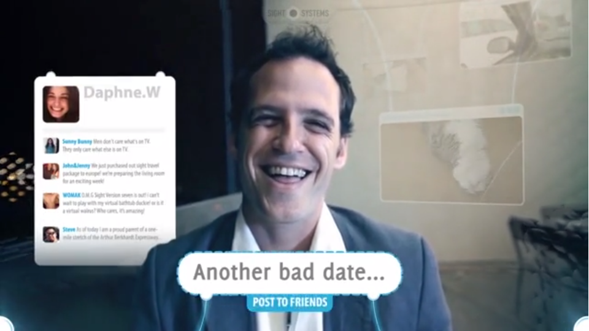
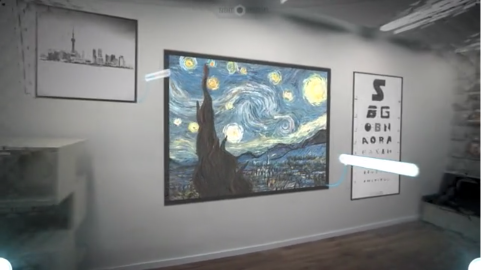

Inspiratie
future vision
French graphic designer Nicolas Damiens source
 Movie: SIGHT. link
A drifter discovers a pair of sunglasses that allow him to wake up to the fact that aliens have taken over the Earth. link
movie: WALL-E


Religion

"Many orthodox people speak as though it were the business of sceptics to disprove received dogmas rather than of dogmatists to prove them. This is, of course, a mistake. If I were to suggest that between the Earth and Mars there is a china teapot revolving about the sun in an elliptical orbit, nobody would be able to disprove my assertion provided I were careful to add that the teapot is too small to be revealed even by our most powerful telescopes. But if I were to go on to say that, since my assertion cannot be disproved, it is intolerable presumption on the part of human reason to doubt it, I should rightly be thought to be talking nonsense. If, however, the existence of such a teapot were affirmed in ancient books, taught as the sacred truth every Sunday, and instilled into the minds of children at school, hesitation to believe in its existence would become a mark of eccentricity and entitle the doubter to the attentions of the psychiatrist in an enlightened age or of the Inquisitor in an earlier time."
Russell's teapot. "Is There a God?" link
Put your number in my phone, i wanna get to know you more.
obsessions.
Visueel en vorm


Under the guidance of best-selling author and editor Arthur Japin, this magazine features a 3D pilgrimage, fashion shoots, timeless wisdom and smart analysis, a spot the savior challenge, music, tattoos, cuisine from the year zero and a guide to holidays we now enjoy thanks to the son of God. Jezus is co-produced with publishing house “Lentemedia” and is available in stores across the Netherlands. LINK!
De Wet des Heeren / De Tien geboden
Naar Exodus 20:1-17 en Deuteronomium 5:6-21
Ik ben de Heere Uw God, Die u uit Egypteland, uit het diensthuis, uitgeleid heb.
1. Gij zult geen andere goden voor Mijn aangezicht hebben.
2. Gij zult u geen gesneden beeld, noch enige gelijkenis maken, van hetgeen boven in den hemel is, noch van hetgeen onder op de aarde is, noch van hetgeen in de wateren onder de aarde is. Gij zult u voor die niet buigen, noch hen dienen; want Ik, de Heere uw God, ben een ijverig God, Die de misdaad der vaderen bezoek aan de kinderen, aan het derde, en aan het vierde lid dergenen, die Mij haten; En doe barmhartigheid aan duizenden dergenen, die Mij liefhebben, en Mijn geboden onderhouden.
3. Gij zult den Naam des Heeren uws Gods niet ijdellijk gebruiken; want de Heere zal niet onschuldig houden, die Zijn Naam ijdellijk gebruikt.
4. Gedenkt den sabbatdag, dat gij dien heiligt. Zes dagen zult gij arbeiden en al uw werk doen; Maar de zevende dag is de sabbat des Heeren uws Gods; dan zult gij geen werk doen, gij, noch uw zoon, noch uw dochter, noch uw dienstknecht, noch uw dienstmaagd, noch uw vee, noch uw vreemdeling, die in uw poorten is; Want in zes dagen heeft de Heere den hemel en de aarde gemaakt, de zee en al wat daarin is, en Hij rustte ten zevenden dage; daarom zegende de Heere den sabbatdag, en heiligde denzelven.
5. Eert uw vader en uw moeder, opdat uw dagen verlengd worden in het land, dat u de Heere uw God geeft.
6. Gij zult niet doodslaan.
7. Gij zult niet echtbreken.
8. Gij zult niet stelen.
9. Gij zult geen valse getuigenis spreken tegen uw naaste.
10. Gij zult niet begeren uws naasten huis; gij zult niet begeren uws naasten vrouw, noch zijn dienstknecht, noch zijn dienstmaagd, noch zijn os, noch zijn ezel, noch iets, dat uws naasten is.
religie beeld research


_-_Drieluik_met_kruisiging,_geboorte_en_verrijzenis_van_Christus_-_D%C3%BCsseldorf_Museum_Kunstpalast_15-08-2012_14-56-25.jpg)